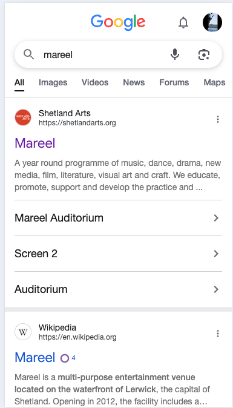
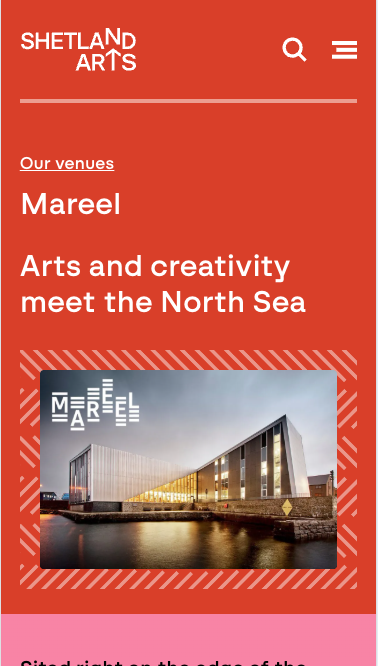
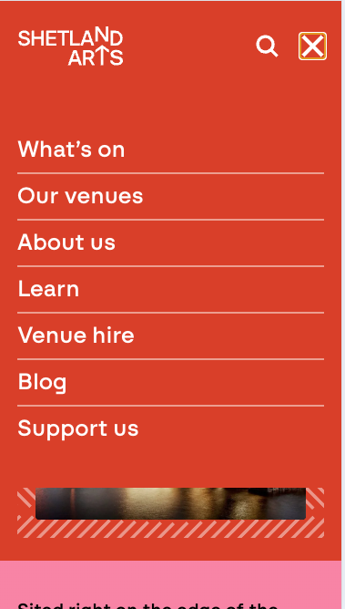
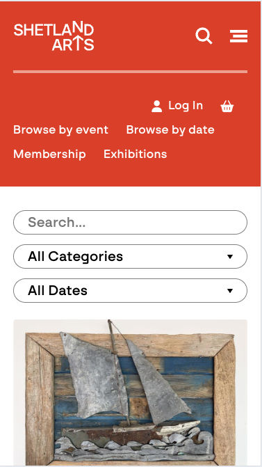
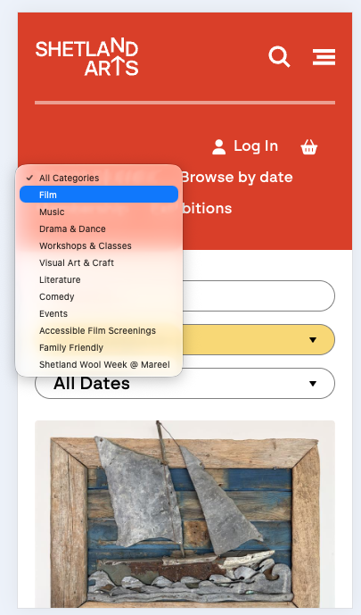
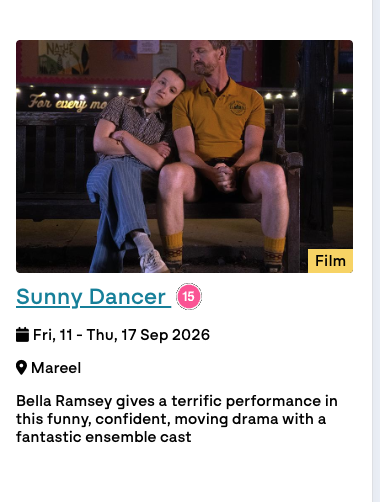
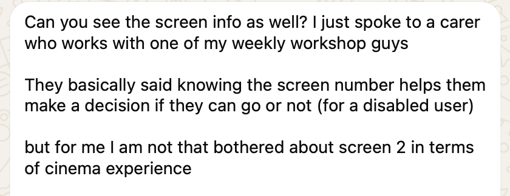

Mareel — What's On widget
The widget people actually see
Every day, Shetland News embeds Mareel's listings in three places on its homepage — mobile, and both sidebars. It's the single biggest passive audience Mareel's programme gets. Here's exactly what they see.

Four events, one at a time, every four seconds. It's a carousel — today it holds Matilda, One Night Only, Practical Magic 2 and a youth music night. You never see two together, and if the one you wanted has just rotated past, you wait for it to come round again.
The thumbnail navigation is commented out in the widget's own source: no dots, no arrows, nothing to pause it. No ticket status either — and nothing in it reaches past 24 September.
The proposal
Same footprint, a real list
Same slot in the sidebar. Instead of four events on a loop, a scrollable list of what's actually coming up — with a date-jump control and live ticket status pulled straight from Shetland Arts' own box office.

The next few weeks at a glance, not four events on a four-second loop. Multi-day runs show their full range (13–18 Oct), and every entry carries its real ticket status.
The Jump to field scrolls straight to any date — useful the moment there's more on than fits one screen, like over Christmas.
Ticket status is the call to action. "Limited tickets" is the one thing on the widget that gives a reader a reason to book today rather than later — a scarcity signal sitting right next to the booking link, on the events where it's genuinely true.
And "Sold out" earns its place too. A sold-out night isn't a dead end on the page — it's evidence the programme fills, and the quiet nudge to book earlier next time. A widget that only ever shows what's still available tells a reader nothing about how well Mareel sells.
Feasibility
No data was made up in the making of this widget
Shetland Arts' box office (Monad) already returns full availability per event, and per individual performance time — sold out, limited, or open — with no login and no token. We pulled this directly, today:
POST tickets.shetlandarts.org/sales/Ajax/Ajax.svc/FolderShowSearch
{
"FolderName": "Shetland Youth Theatre 2026/27",
"IsSoldOut": false,
"IsLimited": true,
"FolderCallToAction": "Buy Tickets",
"FolderStatus": " (Limited Availability)"
}Confirmed at both the show level and every individual performance time (e.g. "7:30PM Friday, 18 September 2026").
The website
Five screens to find out what's on tonight
The widget is one way in. The other is Shetland Arts' own site — where it's the same problem, one level up. This is the actual path, on a phone, from a Google search to a list of films.
1Google "mareel"

Sitelinks offer Auditorium and Screen 2. None of them is listings.
2The venue page

A marketing page. No films, no dates, nothing to click.
3Open the menu

Listings live behind the hamburger, under "What's on".
4What's on

Everything Shetland Arts runs — every venue, every art form.
5Filter to Film

Find "Film" among eleven options in a dropdown.
6A film. One.

A full-width hero card each. One film fills the screen.
are showing at Mareel between today and the end of September — every one of them behind those five screens. And the venue never gets a page of its own.
The destination
And then it still doesn't scan
A cinema listing has one job: answer "what can I see tonight?". The card grid answers a different question — it shows you one poster at a time, and never tells you when the film starts.
Film at Mareel
Thu 17 Sep · Today
Sights and Sounds of ShetlandPG
1:30pm S2♿︎
Sunny Dancer15Last day
3:30pm S2♿︎
Pressure12A
4:00pm S17:00pm S1Silver Screen
The Incomer12ALast day
6:30pm S2♿︎
Fri 18 Sep
Practical Magic 212A
1:00pm S14:15pm S17:30pm S1
Sights and Sounds of ShetlandPG
1:30pm S2♿︎
One Night Only15
2:30pm S2♿︎
Pressure12A
5:15pm S2♿︎
Sat 19 Sep
Practical Magic 212A
1:15pm S14:30pm S1Subtitled
Key
S1 Screen 1 — no step-free access
S2♿︎ Screen 2 — step-free access
Subtitled Relaxed Silver Screen accessible screenings
Five films, eight showtimes, one screen. The same phone, the same scroll position — the current page spends all of it on a single poster.
Lead with the day, not the poster. People arrive with a date already in mind — tonight, Saturday, the school holidays.
Show the times. The current card gives a date range and a paragraph of blurb. It never says 7:30pm.
Same list language as the widget. One pattern for both places Mareel's programme appears.
Accessibility
Worth showing: which screen it’s in
This came in while the mockup was being built. A small field, already in the data, that does real work for part of the audience.

Screen 2 has step-free access. Screen 1 doesn't. For most people that's trivia. For a disabled customer and whoever's bringing them, it's part of working out whether the trip is on — and films move between the two screens mid-run, so it can't be answered once per film.
The box office already knows, showtime by showtime. Every film performance at Mareel in the next three weeks carries its screen — 91 showtimes across 18 films, 41 in Screen 1 and 50 in Screen 2. Not one is blank.
It just never reaches the page. Pressure's own booking page prints "7:00 pm Silver Screen" — the access tag, rendered — from a payload that in the same breath says "FolderSpaceData": "Screen 2". The screen is loaded, then dropped.
Under the hood
The filter never reaches the URL
Choose "Film" and the list does change. The address bar doesn't. There's no link to copy, nothing to put in a Facebook post, nothing for Google to send anyone to — the filtered view exists only inside your own browser.
After five screens, filtered to Film
https://tickets.shetlandarts.org/sales
Character-for-character the same as the unfiltered page. No query string, no fragment — checked by driving the dropdown ourselves.
Meanwhile, already live — and linked from nowhere
https://tickets.shetlandarts.org/sales/categories/film
This page exists today and lists every film, Mareel-scoped. The nav doesn't link it, the venue page doesn't link it, the widget doesn't link it, and the category dropdown never takes you there.
Two small fixes: put the filter in the URL, and point the places people actually start — Google, the venue page, the widget — at a film list that already half exists.